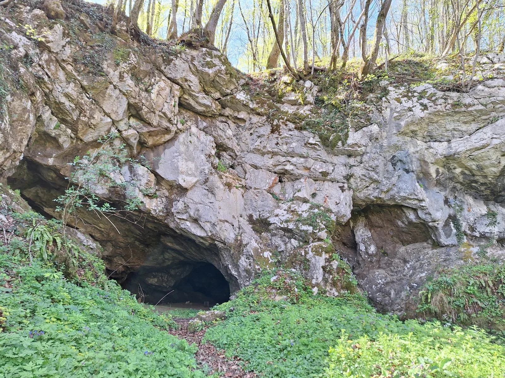

Ljute papučice, Maslački i Durex na Matešićki.
Sedam ujutro je, 6. travnja 2024. godine i krećemo na drugi izlet naše speleološke školice. Nalazimo se kod NSB-a na jutarnjoj kavici iz termosica. Neki rane, neki kasne. Oko 8:10 smo se uspjeli svi skupiti, potrpati u…

Napisala: Matea Novosel
Fotografije: ne znamo jer nam nisu poslali imena autora :/
Sedam ujutro je, 6. travnja 2024. godine i krećemo na drugi izlet naše speleološke školice. Nalazimo se kod NSB-a na jutarnjoj kavici iz termosica. Neki rane, neki kasne. Oko 8:10 smo se uspjeli svi skupiti, potrpati u aute i krenuti prema Matešićkoj špilji, blizu Slunja i Rastoka. Nakon Rastoka skrenuli smo u brdo i sparkirali se na livadi blizu same Matešičke. Uzimamo osobne stvari, transportke i neoprene te se krećemo spuštati pješice. Neopreni će nam kasnije trebati, jer je špilja puna vode.
P opovačka špilja - druga strana sustava Matešićeva špilja-Popovačka špilja
Stižemo na naše kampersko mjesto uz Koranu oko 10:00 sati. Prvo smo izvadili hranu-uobičajeni „velebitaški stol“, koji je izgledao nešto drugačije nego na prvom izletu- nije bio na ceradi, nego na drvenom stolu sa drvenim klupama okolo, a ovog puta smo imali i drveni krov. Nedaleko „kuhinje“ smo zajedničkim snagama izgradili bivke.
Glavni voditelj Ličko nas je podijelio u 3 plemena kojima smo sami morali dodijeliti imena. Tako su nastale „Ljute papučice“, „Durex“ i „Maslački“, da Tea, Klara i Matea slučajno ne bi bile zajedno (rekla bih da isto vrijedi za Igora i Antonija). Bilo nas je šestero u svakom plemenu, a onda i bivku.Kasnije smo se opet svi okupili uz hranu, pojeli i raspodijelili u grupe/plemena. Jedna grupa se otišla penjati na stijenu, druga oblačiti neoprene i u špilju, a treća je radila snalaženje na karti uz kompas i aplikaciju „OruxMaps“. Prije samog odlaska na zadatke, Čedo je vodio zagrijavanje uz igre. Bili smo podijeljeni u nove dvije grupe. Jedna od igara sadržavala je izniman timski rad, a to je slanje signala preko ruku. Pobjednik je ona grupa koja prije pošalje signal do svojeg zadnjeg igrača, a taj igrač prvi uzme nagradu-trofej od spužve.
Zagrijali smo se i zabavili, a sada možemo prionuti na posao.
Pleme „Maslački“ bilo je prvo na stijeni i imali su priliku gledati kako se postavljaju sidrišta. Instruktori i instruktorice Lucija, Barbara, Dora i Ivor postavljali su sidrišta od vrha s drveća, a Čajko se spuštao po užetu, bušio rupe i postavljao dodatna sidrišta na samoj stijeni. Bilo je dosta kamenja koje se moralo maknuti, kako bi nama školarcima bilo lakše penjati i spuštati. Često se čulo „kameeen!“ (obavezno je vikanje „kamen“ pri padu kamena, ali i drugih predmeta s visine, da bi ostali špiljari bili upozoreni, te se na vrijeme pomaknuli na sigurnije mjesto).
Vježbanje uzlova nikada nije dovoljno, pa koristimo svaku priliku, pauzu ili čekanje za vježbanje šestice, osmice, dvostruke i trostruke-trebat će za sidrišta, devetke, ambulantnog -dobro dođe za vezanje transportke, bulina, lađarca i polulađarca, leptira, prusika..., a i jednog novog-zastavni uzao (sličan kao ambulatni), jer je uvijek dobro pogledati čega još ima u skripti. Vođa Ličko je dao zadatak Teu i Hrvoju da naprave sidrišta za „zipline“, a Tibor se uspio i spustiti. Antonio je također pomagao, dok smo mi ostali iz plemena pristojno čekali svoj red za penjanje na stijenu.
Instruktori su gotovi sa postavljanjem i krećemo na penjanje. Izlaz/ulaz iz Matešićke je baš ispod stijene. Uskoro smo mogli vidjeti kako izlaze školarci „Ljute papučice“ sa svojim instruktorima Keti, Helenom, Daliborom, Dodom... ispod stijene, a mi od gore moramo biti pažljiviji, da ne bi pao neki dio zemlje ili kamena pri penjanju njima na glavu.
Slijedi mali odmor i natrag na zadatke. Dan i obaveze su se neplanirano odužile, a počela se javljati i glad. Oko 17 sati dolaze i svi ostali na stijenu, umorni školarci i umorni instruktori. Odjednom i ni od kuda dolazi školarka Dragana, kao spasiteljica sa hranom i vodom, po nalogu Lička.
Na izmučenim licima sada se vidi zahvalnost i oduševljenje.
Dan se primiče kraju, vraćamo se „doma“ u kamp i priprema se logorska vatrica. Dočekao nas je prefini grah kojeg je u kotlu skuhala Jelena. Vrijeme nas je vrlo dobro poslužilo, bilo je prevruće za ovo doba godine. Kada je pao mrak, uspjeli smo malo predahnuti. Uživalo se, sviralo i pjevalo uz logorsku vatru. Uobičajeno, Edo preuzima „glavnu riječ“ na gitari svojim zvonkim glasom, a pomaže mu Jela uz impresivno fućkanje (takvo divno, precizno i gromko fućkanje još niste čuli. Mnogi su bili oduševljena njegovom vještinom). Kasnije im se pridružuje Duc sa ostalim školarcima i instruktorima.
Nakon više sati druženja, umor nas je svladao i počeli smo se jedan po jedan povlačiti u svoje „sobe“ (bivke).
Drugi dan po već uobičajenoj špranci-zajedno jedemo doručak, a Čedo već čeka spreman s novom igrom. Opet je naglasak na grupnom radu: užetom se moramo zanjihati i preskočiti s „otoka na otok“. Dok jedan preskače, ostali (koji već stoje preko, na obali) hvataju onoga sa štrika, kako bi taj mogao ući u krug koji je Čedo napravio od špage.
Dva puta smo uspješno položili zadatak. Ugrijani, krećemo u nove pustolovine. Pleme „Maslački“ i pleme „Durex“ još nisu prošli špilju. Dok se mi oblačimo i navlačimo neoprene (teška mukica), ostala dva plemena idu na stijenu. Bio je fantastičan osjećaj kretati se kroz špilju i usput kupati jer veliki je dio nje pod vodom. Zahvaljujući neoprenima nismo se smočili do kože i bilo nam je ugodno u ledenoj vodi. Na nekim je djelovima voda dublja, tako da dok drugi normalno hodaju kroz vodu, oni niži, s manje sreće moraju kratko zaplivati.
U špilji smo vidjeli slatke male šišmiše i „zvijezdano nebo“ od bakterija, koje se sjaje kada ih se osvjetli. Kroz špilju stižemo do stijene, družimo se kratko sa susjednim plemenom i vaćamo se od tamo od kud smo i došli.
Uslijedilo je kupanje u Korani-prekrasan doživljaj i pranje nakon višesatnog (i od prošlog dana) preznojavanja. Sušimo se, skidamo neoprene (opet muka najveća, ali ovaj puta je bilo nešto lakše, jer smo bili mokri) i spremamo se za čitanje karte.
Odmor trudbenika Vikend mokrih repova i školaraca
Čedo, Goga i Darko nam objašnjavaju kako čitati kartu i odrediti azimut. Naravno da Čedo opet ima zanimljivu igru u rukavu, kako bi nam lakše objasnio kretanje uz kompas. Sakrio je 5 trokuta u šumi i napisao stupnjeve. Mi smo od zadanih točaka morali odrediti azimut-smjer kretanja prema zadanom stupnju i uspješno riješiti zadatak. Goga nam je zatim dala koordinate Flanjkove špilje, nedaleko našeg bivka-na udaljenosti manjoj od kilometra. Orijentirali smo se uz pomoć aplikaciji „OruxMaps“ i vodili naše instruktore do špilje. Završivši i taj zadatak, vraćamo se na stijenu, gdje se nalazimo s ostalim špiljarima.
Ček' da vidim da li je to to...
Mamma mia, signorina!
Za kraj još malo vježbamo penjanje, družimo se te slažemo opremu (karabinere ilitiga karabinjere (??, op. adm.), stop descender ilitiga defender (tipfeler kojeg zlorabimo, op. podlih adm. :) ), bloker ilitiga stoper, croll-za to mi nije trebala zamjena...).
Svi se zajedno vraćamo u bivke, slažemo stvari i spremamo se za polazak. Ono što mi je omiljeno na ovoj školici je zajedništvo i grupni rad: ako nešto nemaš, nema problema, ima netko oko tebe, ako pak u sljedećem trenutku netko drugi nešto nema, uskačeš ti sa svojom opremom. Opreme nikad dosta!
Uz zadnji obrok oko stola prepričavamo doživljaje i jedva čekamo sljedeći izlet! :)
Neki rade. Neki nadziru. Neki pričaju. Drugi spavaju. :)